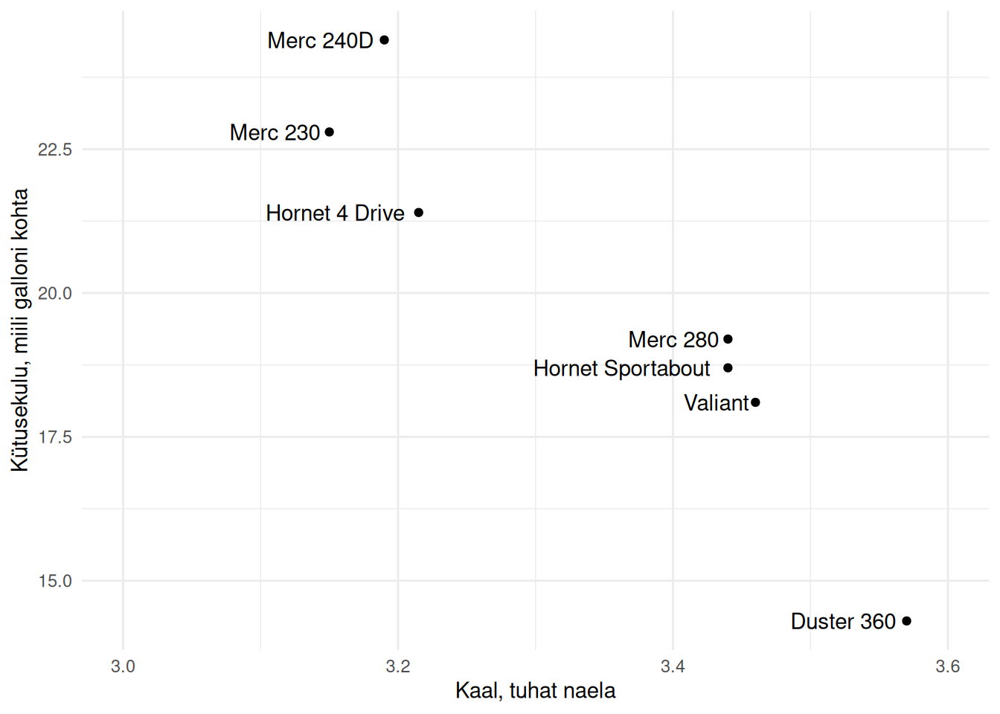

16 Statistiline kaugus
Mitmete meetodite puhul on klassifitseerimise ja klasterdamise aluseks erinevused vaatluste vahel. Sellised meetodid on nt lähinaabrid ja hierarhiline klasterdamine, aga ka k-keskmised. Sellisel juhul saab vaatluste erinevusi teineteisest mõõta statistilise kauguse alusel, eeldades et mingite tunnuste väärtustel alusel lähestikku asuvad vaatlusel on sarnased.
Important
Statistiline kaugus (statistical distance) iseloomustab erinevusi vaatluste vahel. Selle aluseks on vaatluste kaugus teineteisest mingite tunnuste väärtuste erinevuse alusel.
Kaugust saab mõõta korraga kahe vaatluse vahel. Seega arvutatakse kaugused paariviisiliselt kõikide vaatluste omavahelise võrdlemise teel. Need kaugused esitatakse kauguste maatriksina (distance matrix), milles iga rida ja veerg esindab ühte vaatlust ning lahtrites on seega kaugused kõikide vaatluste vahel1.
1 See on sarnane linnade vaheliste kauguste tabelitele, ainult et statistilise kauguse aluseks ei ole punkti paiknemine mitte füüsilises, vaid tunnuste alusel moodustunud ruumis.
Arvutuskäike kauguse mõõtmiseks on mitmeid, aga kõige sagedamini kasutatakse Eukleidilist kaugust, mille aluseks on Eukleidese teoreem. Kui meil on vaatlused \(i\) ja \(j\), siis tunnuste \(x\) ja \(y\) alusel leitakse nende vaheline kaugus \(d(i,j)\) alljärgnevalt: \[d_E(i,j) = \sqrt{(x_i - x_j)^2 + (y_i - y_j)^2}.\]
Mõnikord kasutatakse ka veidi lihtsamalt Manhattani kaugust: \[d_M(i,j) = |x_i - x_j| + |y_i - y_j|.\]
Tunnuste ruumi saame kujutada hajuvusjoonisel.
R keeles saame kaugusi leida funktsiooni dist() abil, mille argument method võimaldab valida erinevate kauguste vahel.
dist(autod, method = 'euclidean') Hornet 4 Drive Hornet Sportabout Valiant Duster 360
Hornet Sportabout 2.7093588
Valiant 3.3090822 0.6003332
Duster 360 7.1088695 4.4019200 3.8015918
Merc 240D 3.0001042 5.7054798 6.3057831 10.1071460
Merc 230 1.4015081 4.1102433 4.7102123 8.5103701
Merc 280 2.2114758 0.5000000 1.1001818 4.9017242
Merc 240D Merc 230
Hornet Sportabout
Valiant
Duster 360
Merc 240D
Merc 230 1.6004999
Merc 280 5.2060061 3.6116617Nii tabelist kui ka jooniselt Joonis 23.1 näeme, et mudelile Hornet 4 Drive on vaadeldavate tunnuste alusel kõige lähemal ja seega kõige sarnasem mudel Merc 230.
Kaugus oleneb tunnuste mõõteskaaladest ja väärtuse hajuvusest. Tunnused, mille väärtused on suuremad ja mis hajuvad rohkem, mõjutavad suuremal määral ka kaugust kahe vaatluse vahel. Seetõttu viiakse enne kauguste arvutamist tunnused enamasti samale skaalale standardiseerimise teel.